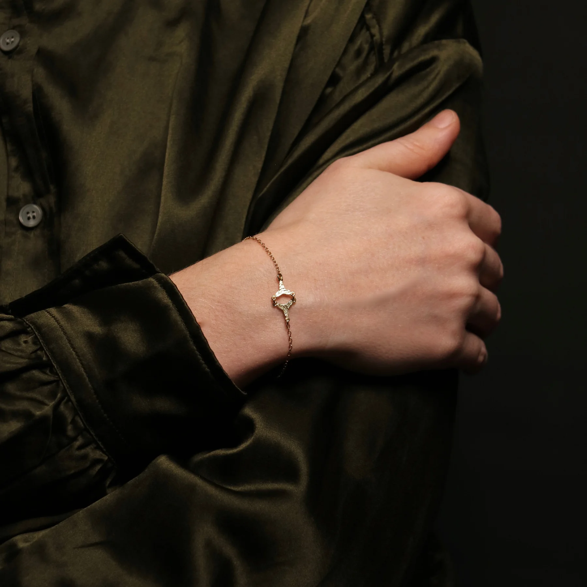

01about the year 1000
Source
Two brooches from pagan graves
Fríða based the line on two brooches found in Iceland: the Nordic Tongue Brooch and the Celtic Three-Armed Brooch. They came out of old pagan graves and are about a thousand years old.
Fríða based the collection on two brooches, the Nordic Tongue Brooch & the Celtic Three-Armed Brooch, which were found in old pagan graves and are about 1,000 years old.
fridaskart.is
See the line 128 pieces in the line